AcaciasAcianosAlhelísAmapolasAmarilisAzaleasAzucenasBegoniasBelladonasCameliasCampanillasClavelesClaveles chinosClematisCorazón de MaríaCrisantemosDaliasFlor de primaveraFlores para adelgazarFlores para cocinarFlores para enamorarFrancesillasFresiasGeraniosGirasolesGladiolosHortensiasIrisJacintosJazmínLaurelesLavandasLilasLiriosLisMadreselvasMagnoliasMargaritasMimosasNarcisosNenúfaresNomeolvidesOrquídeasPensamientosPeoníasPetuniasPrímulasRosasTulipanesVioletas
CactusCactus más rarosCómo usar
fertilizantesConvertirse en
floristaFlores amarillasFlores azulesFlores blancasFlores de bodaFlores
moradasFlores naranjasFlores para
perfumeríaFlores rojasFlores verdesFlores y
cosméticaFunerales y condolenciasHerramientas para
cuidarHuertos
verticalesPlantas de marihuanaPlantas
resistentes al solProductos cosméticosRemedios reafirmantes
Respiración y
fotosíntesisPlantas de salón
Fotos e imágenes
En Flores Pedia puedes encontrar 499 fotos, imágenes o dibujos.
En esta sección las listamos todas, distribuidas en distintas páginas. Ésta es la página 4. Puedes
ampliar la información de la foto y ver a qué artículo corresponde. Para ello, simplemente pincha
sobre ella.
Flores azules: Acónitos
comunes Flores azules: Espuelas
de caballero
Flores azules: Espuelas
de caballero Flores azules:
Campanillas chinas
Flores azules:
Campanillas chinas Flores azules:
MuscarisFlores azules: LobeliasFlores azules: Lirios de
aguaFlores azules:
CampanulasFlores azulesFlores rojas: Claveles
del monte
Flores azules:
MuscarisFlores azules: LobeliasFlores azules: Lirios de
aguaFlores azules:
CampanulasFlores azulesFlores rojas: Claveles
del monte Flores rojas:
Amapolas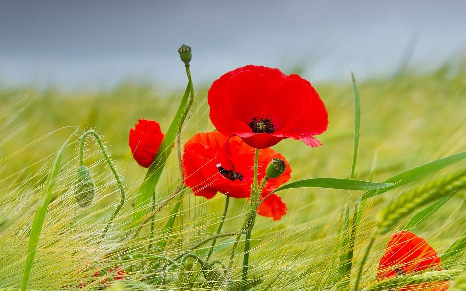Flores rojas: Tulipanes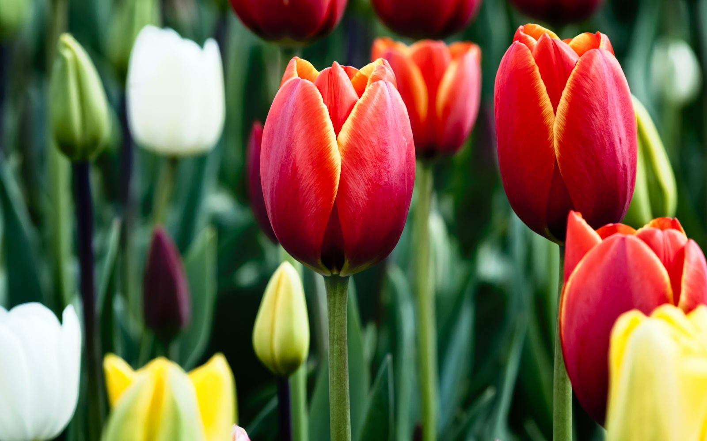Flores rojas:
GladiolasFlores rojas: GerberasFlores rojas: Jazmín de
ChileFlores rojas: Rosas
chinas
Flores rojas:
Amapolas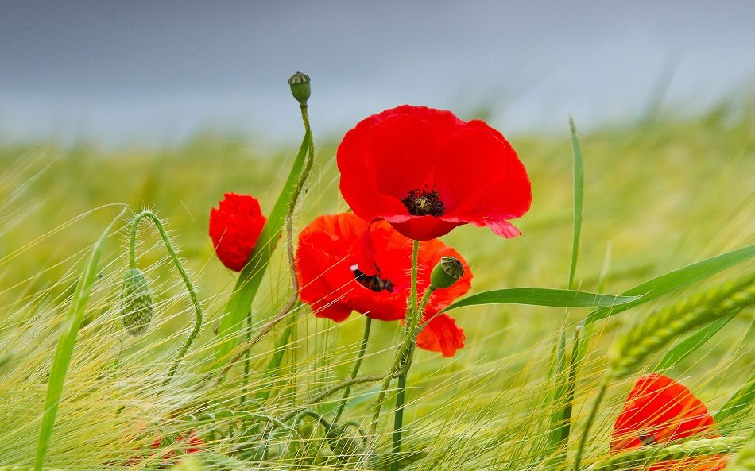Flores rojas: Tulipanes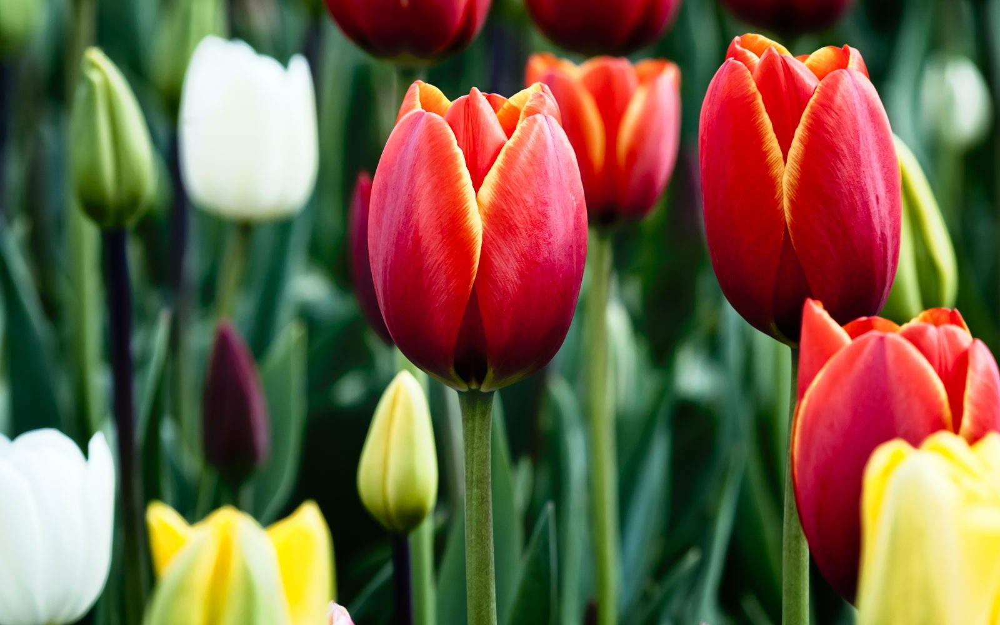Flores rojas:
GladiolasFlores rojas: GerberasFlores rojas: Jazmín de
ChileFlores rojas: Rosas
chinas Flores rojas:
DaliasFlores rojas
Flores rojas:
DaliasFlores rojas Flores amarillas:
Botones de oro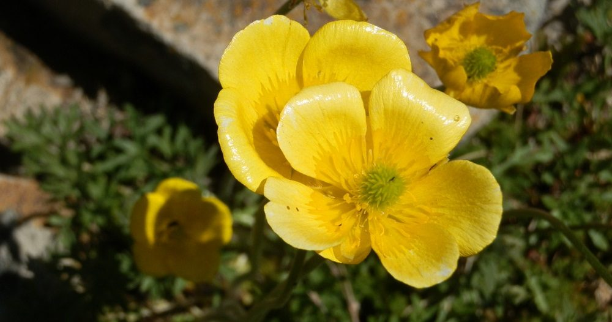Flores amarillas:
Aleluyas amarillas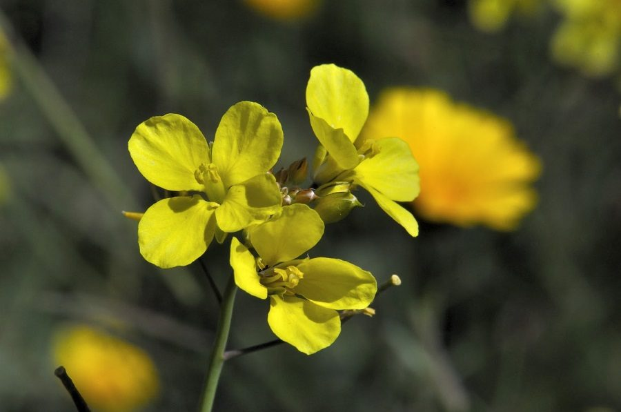Flores amarillas:
Aladiernos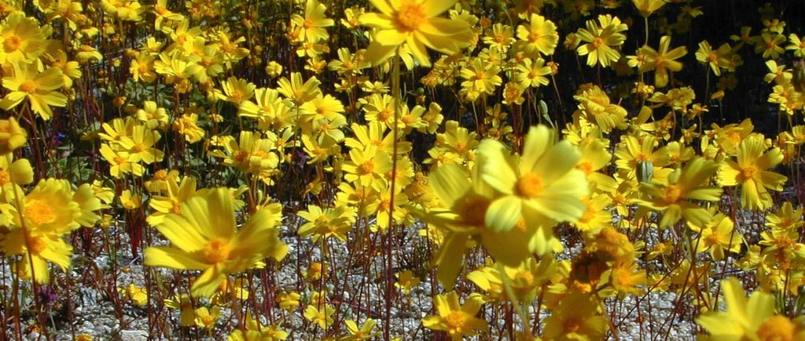Flores amarillas:
AmapolasFlores amarillas:
AlmorejosFlores amarillas:
AguaturmasFlores amarillas:
Agracejos
Flores amarillas:
Botones de oro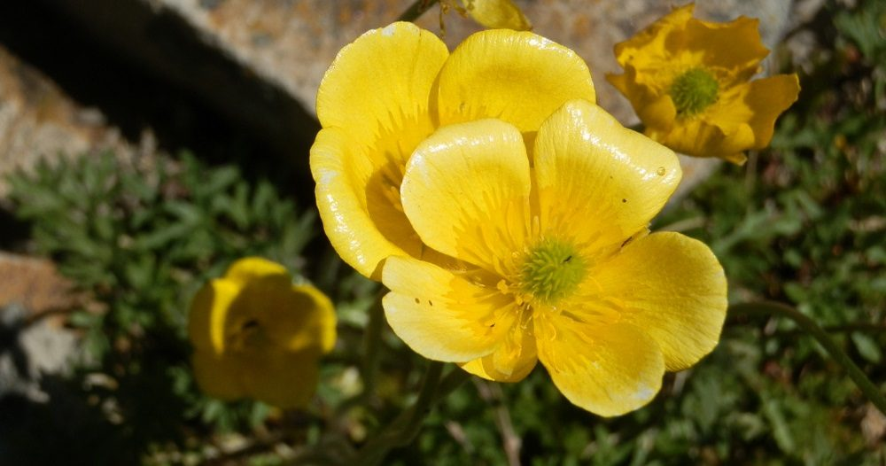Flores amarillas:
Aleluyas amarillas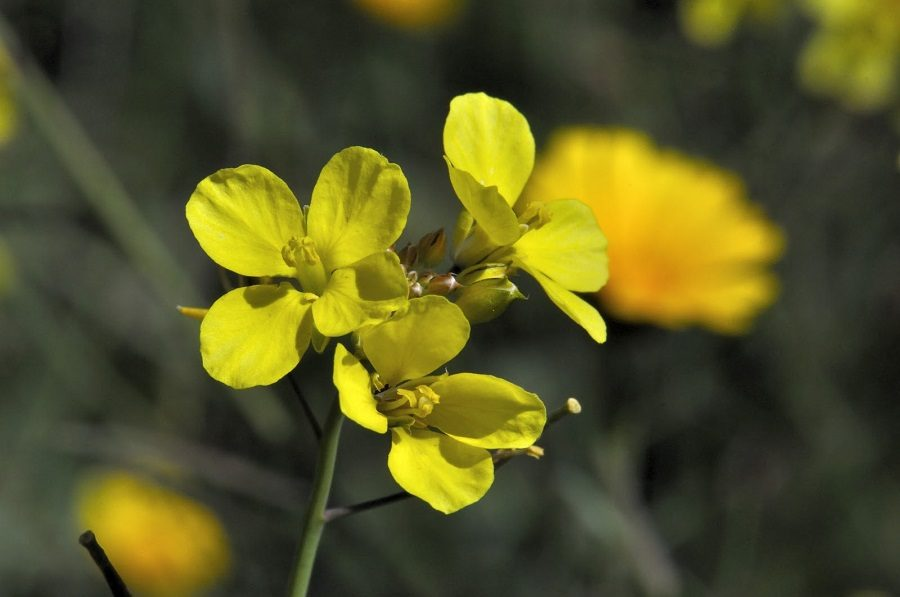Flores amarillas:
Aladiernos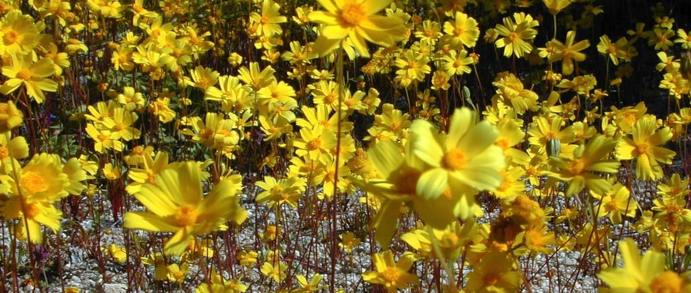Flores amarillas:
AmapolasFlores amarillas:
AlmorejosFlores amarillas:
AguaturmasFlores amarillas:
Agracejos
Flores azules: Espuelas
de caballeroFlores azules:
Campanillas chinasFlores azules:
MuscarisFlores azules: LobeliasFlores azules: Lirios de
aguaFlores azules:
CampanulasFlores azulesFlores rojas: Claveles
del monteFlores rojas:
Amapolas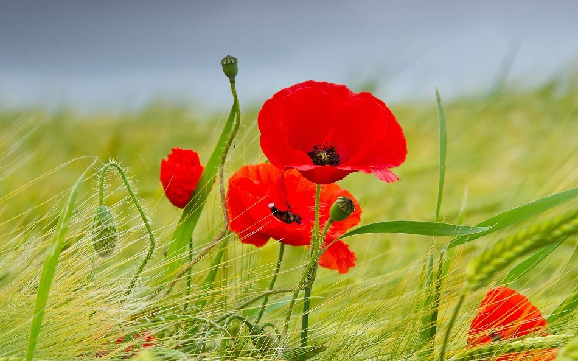Flores rojas: Tulipanes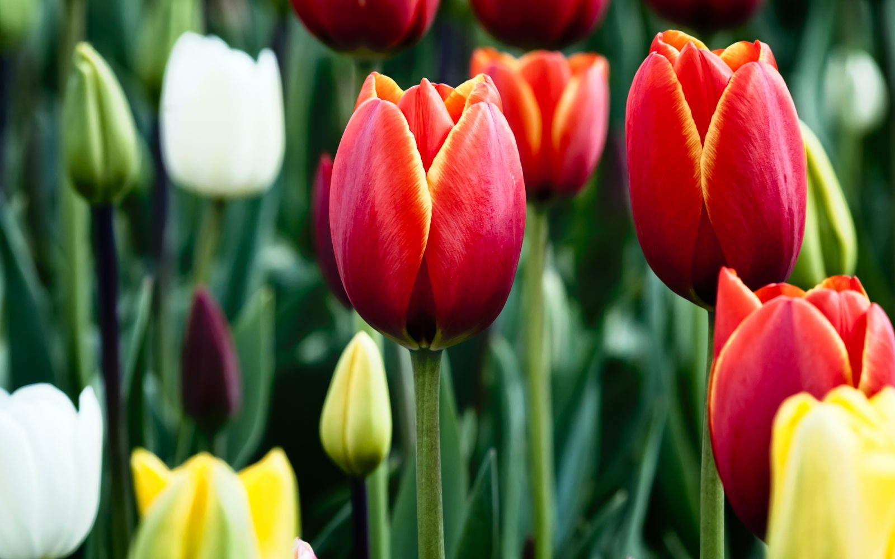Flores rojas:
GladiolasFlores rojas: GerberasFlores rojas: Jazmín de
ChileFlores rojas: Rosas
chinasFlores rojas:
DaliasFlores rojasFlores amarillas:
Botones de oro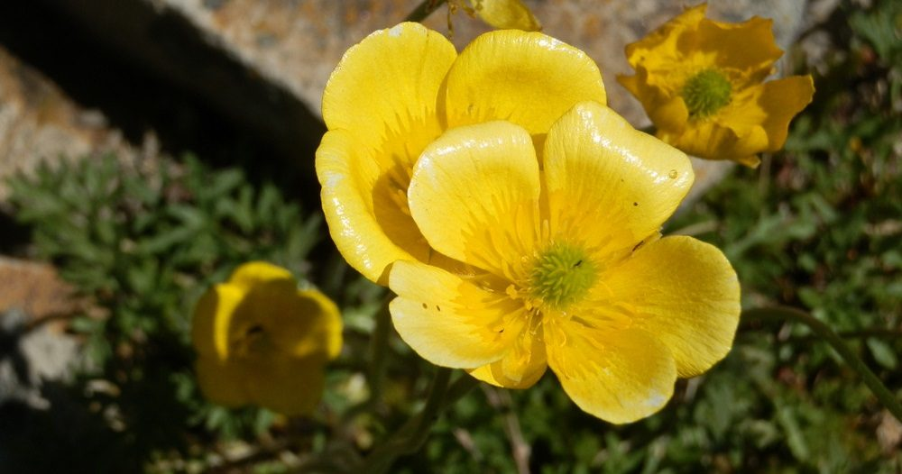Flores amarillas:
Aleluyas amarillas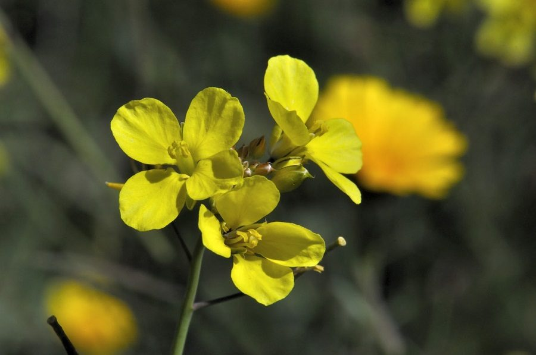Flores amarillas:
Aladiernos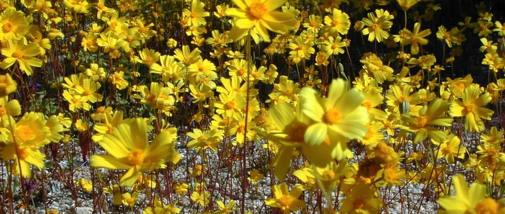Flores amarillas:
AmapolasFlores amarillas:
AlmorejosFlores amarillas:
AguaturmasFlores amarillas:
Agracejos